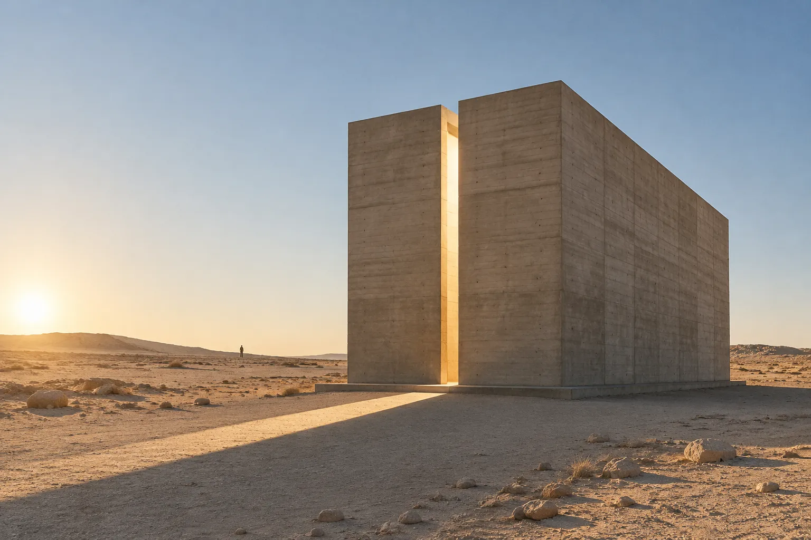

01
Chapel of the Long Noon
- Location
- Atacama, Chile
- Year
- 2019
- Area
- 86 m²
A box of board-formed concrete with a single instruction: at solar noon on the winter solstice, a 600 mm blade of light crosses the floor and touches the altar. The rest of the year the chapel keeps time for the goat herders who poured its walls.
Photographed at 07:10